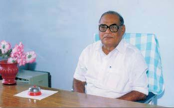
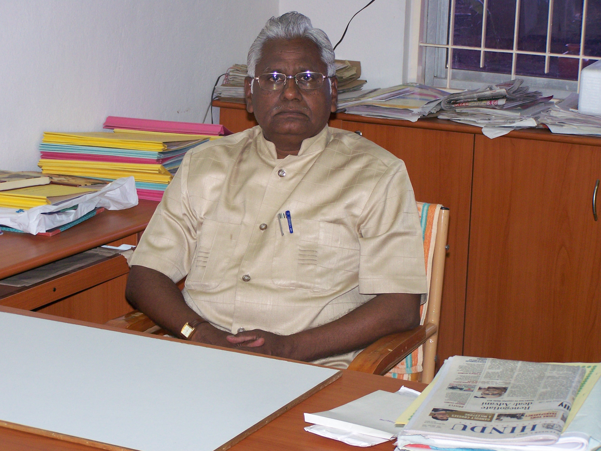
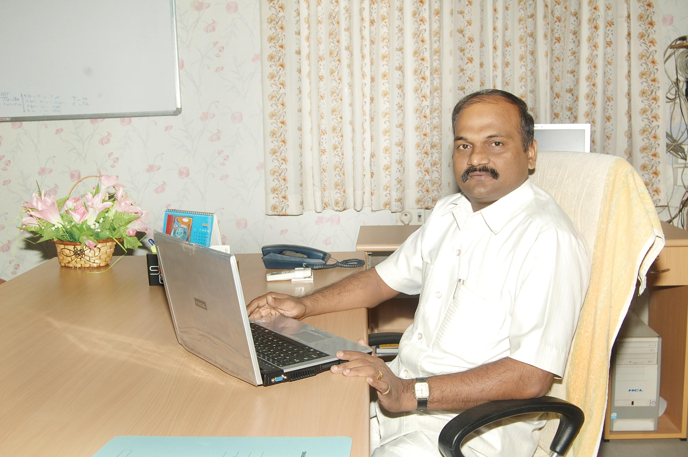
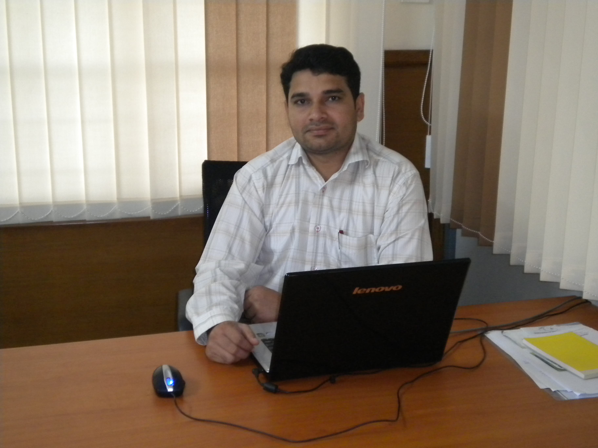

Thiru. Jansons T.S.Natarajan,
CHAIRMAN
"The successful person makes a habit of
doing What the failing person doesn't like to do" - Thomas
Edison
Let God be with you in all your endeavours and let His Blessings
permit you all, to taste the flavour of success.
Back
Thiru. T.P.
ARUMUGAM Ex. M.L.A.,
Secretary & Correspondent,

"Honest disagreement is often a good sign of
progress" - Mohandas Gandhi
The field
of Computer Science allures all with its, perennial charm and it is omnipresent.
RAZONAMIENTO'12, a National Level Technical Symposium,
organized by the Department of M.C.A., aims at tapping the potentials and
sharpening their brains of the youngsters to get the expected results.
RAZONAMIENTO'12
proclaims the rising of a new
glorious era. Souvenier Ricordo offers a chance for the seizable number of
toppers to afoot, new efforts. For several stemming problems, seeds of new
ideas are sown now by the young talented minds.
I congratulate the Director, the
Principal, the H.O.D., the faculty members and the students of the Department
of M.C.A., for organizing RAZONAMIENTO'12 in a successful way.
On behalf of Sengunthar Charitable Trust, I
extend my best wishes for the organizers and the participants.
Back
Prof. A.
Baladhandapani, M.A., M.Phil.,
Director,

"The three great essentials to achieve anything worth while
are First-Hard work, Second-Broad Mind third-Common Sense."
We are all
proud of the Age we live in the Age of Science and Technology. Computer
Technology occupies an inevitable place in all walks of our life. As smell is
natural to flowers, so is the quest for knowledge to man.
RAZONAMIENTO'12,
a National Level Technical Symposium, is a colorful festival for knowledge
hunters as it churns the quest in the thirsty minds. It serves as perfect
platform for the students from colleges all over the country, to interact and
share their views.
This
souvenir displays bewitching richness and matchless magnificence as it renders
a chance to all youngsters to come out with breath taking ideas. It wide opens
a new co-operative era because students from in and around are invited to
reveal their quintessence of wit.
I
congratulate the Principal, the H.O.D., the faculty members and the Students of
the Department of M.C.A., for organizing RAZONAMIENTO'12 in a
wonderful manner. Let the Almighty shower His Blessings to make RAZONAMIENTO'12
a grand success.
Back
Dr. N.
Kottiswaran.,BE(Civil).,ME(Struct) Ph.D.,
Principal

" The good teacher explains,
The superior teacher demonstrates,
The great teacher inspires."
Students
skills are intricately carved and compactly packed in our institution through
workshops, symposiums and conferences. This souvenir Ricardo's wealth of wit
injects a sense of wonder and joy in me. I hope that this symposium will serve
as a tool for the evolution of students' career and in turn our nation's
future.
I am
pleased and I would like to share a word of appreciation for the Department of
MCA for releasing the souvenir Ricardo on the glorious occasion of RAZONAMIENTO'12,
a National Level Technical Symposium. I hope this opportunity will pave a way
to exhibit the hidden sparks in the young and energetic brains. Let us embark
many more glory in our voyage through the finer realms of knowledge with the
support of our management, faculty and students.
Back
A.B.Madhan,BE(Aeronautical)
CEO

"A genuine leader is
not a searcher for consensus but a molder of consensus."
RAZONAMIENTO'12
promise an exhilarating multi-genre
diversity and render a scope for all the inspired scholars to come out with
their flamboyant skills. I wish all the younger's to participate actively in
such symposiums which will show them a new horizon and kindle the query "What
is next?".
I congratulate the Head of the Department, faculty
members and the students for their inventive steps in bringing out this event
in a grandiose way
Back
Mr.Aravind Thirunavukkarasu,MCA

"A good scientist is a person with
original ideas. A good engineer is a
person whi makes a design that works with a few original ideas as
possible."
Sharing the big dream of a future where computers are
completely capable of taking over human tasks, these computer scientists and
software engineers have gathered in Sengunthar Engineering college. MCA Dept is
one of the best Department in our College.
RAZONAMIENTO'12 is
the 9th National Level Technical Symposium that have been organized by the Department
of MCA.
In the world that we live in
toady we are closely related to information and managing data with applications
in every aspect of our lives. In this One-day symposium the future software
Engineers will discuss the mechanisms.
Back
S.Pradeep
Gnanam,MCA.,M.Phil.,(Ph.D)
Convenor

"If you can imagine it, you can create it. If you
dream it, you can become it."
Sengunthar
Engineering College renders grains of salt that appease appetite in technical
education. I feel extremely happy in organizing this 9th National Level
Technical Symposium RAZONAMIENTO'12 at our college campus. Our
students utilize this dazzling chance to reveal their technical insight and
artistic depth. With great pleasure, I extend my humble gratitude to our
venerated Secretary and Correspondent Thiru. T. P. Arumugam. Ex MLA for giving
his whole hearted blessings and support.
We submit our gratitude to our
Director Prof. A. Baladhandapani, M.A., M.Phil., for his generous counsel and
ardent encouragement. We express our sincere thanks to our beloved Principal
Dr. N. Kottiswaran, for his enthusiastic support and suggestion throughout this
venture.
I convey my appreciation to
the staff members, of the Department of MCA for their co-operative spirit and
amiable ideas. I and the staff members of our Department, congratulate all the
students, who have made this event a notable one.
I thank all delegates and the student friends from various colleges for their
contribution and unlimited prolific enthusiasm.
Back